高级数据库技术期末复习整理
秋冬学期上了一门研究生课程《高级数据库技术》，高云君老师上课还挺有意思的，虽然自己讲的时间比较少，平时也没啥作业，总的来说比较摸鱼。快要期末考试了所以来整理一下这门课讲了哪些东西。
空间数据库
空间数据库可以存储空间中的点，线，面的信息，其功能包括：最短路径搜索，最快路径搜索，区间查询，聚合查询，近邻查询，最优位置查询，skyline查询等等。下面这些内容都是空间数据库中的经典算法。
R-Tree
R树是一种用来解决空间数据库中高效查询问题的数据结构，在空间数据库中，数据往往不是单维度的，会有多个维度的数据共同参与到一次查询中，比如对考试成绩的查询，需要查同时满足数学成绩位于80-90以及化学成绩位于80-90的同学时，如果我们采用传统的数据库索引(比如B+树)可能就会碰到下面的问题：
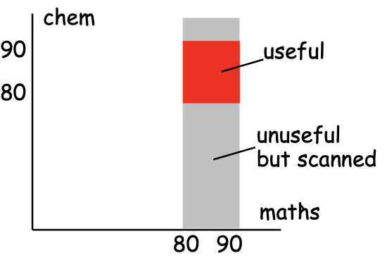
比如我们先将数学成绩作为主键，查询到所有数学成绩位于80-90的同学，然后在此基础上继续查化学成绩位于80-90的同学，那么势必会造成，第一次查询的结果中包含一些化学成绩不在80-90的无效查询结果，这会造成性能上的浪费。而R树正是为了解决这个问题而被设计出来的，它可以一次就查询出所有同时满足两个条件的数据点。
R树的基本特点
R树是一种多维度的索引，支持在查询中同时顾及到多个维度的信息(B+树每次查询只能顾及到一维的信息)，同时它有这样几个组成部分：
- 页的容量，代表了每个节点能容纳的数据条数
- 最小的节点扇出率，代表了R树中根节点以外的节点最少需要存储的数据条数的比例，如果低于这个数量，那么这个节点就应该和其他的节点合并
- 树的高度和层数
- 每个节点中包含若干entry，在叶节点中，entry代表的就是存储的数据，而非叶节点中是类似B+树的划分区间，可以辅助搜索
同时，R树只在叶节点上存储真正的数据点，而在非叶节点中存储的是一种被称为minimum bounding rectangle(MBR)的结构，这个结构是一个能刚好包含其全部子结点所处区域的最小矩形，比如下面这个例子：
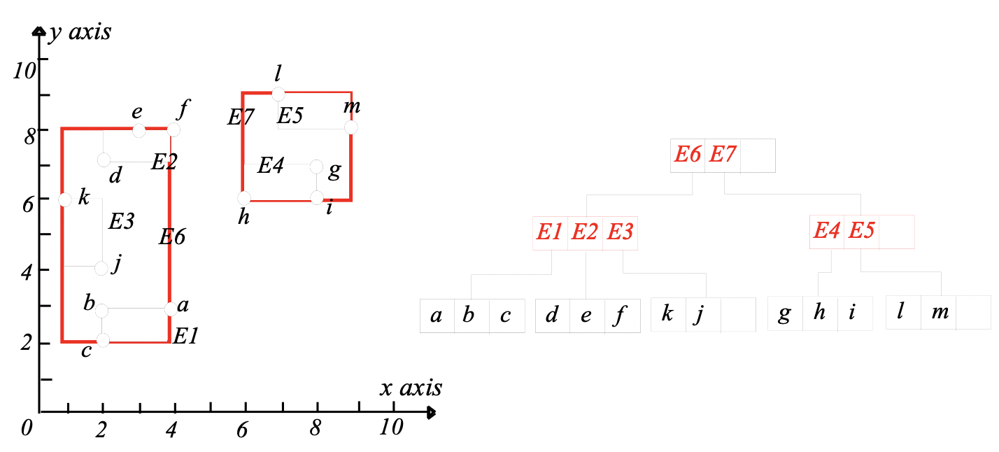
而R树上的区间查询也就是根据这些MBR来进行的，通过MBR的边界不断缩小查询范围，最后查到想要的数据点，比如我们要查询所有满足x坐标在5-8.5之间，y坐标在4-7.5之间的点的时候，就从根节点开始比较，发现E7种的点和查询区间有交集，那么就往E7下去查E4E5，发现E4区域和查询区间有交集，那么再往下查就可以查到ghi三个点，分别判断他们符不符合条件就可以了。
同时要注意的是，理论上来说，MBR是可以由数据点随意组合而成的，只要一个矩形所包含的数据点不超过一个页的容量即可，比如上图中，容量是3，一个小矩形就最多只能包含3个点，而一个大矩形最多只能包含3个小矩形，但是为了更好的查询，R树规定让MBR的周长最小化，即在组合生成MBR时，优先选择生成MBR最小的。
R树节点的插入操作
R树的插入操作会从R树的根节点开始选择，每次选择出插入之后使得当前的MBR周长变化最小的一个MBR，然后不断往下搜索并，直到找到合适的位置，比如下面这个例子：
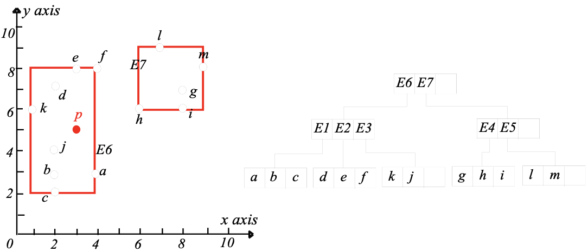
我们的目标时在当前R树中插入一个新的点P，那么从根节点开始，发现如果把P插入E6区域，相比于E7区域而言MBR改变的更小(在这里是0)，因此选择E6并继续往下搜索，然后分别假设P插入E1/E2/E3三个区域，比较它们的MBR变化的情况，发现插入E3的MBR变化最小，那么就插入E3，得到下面的结果：
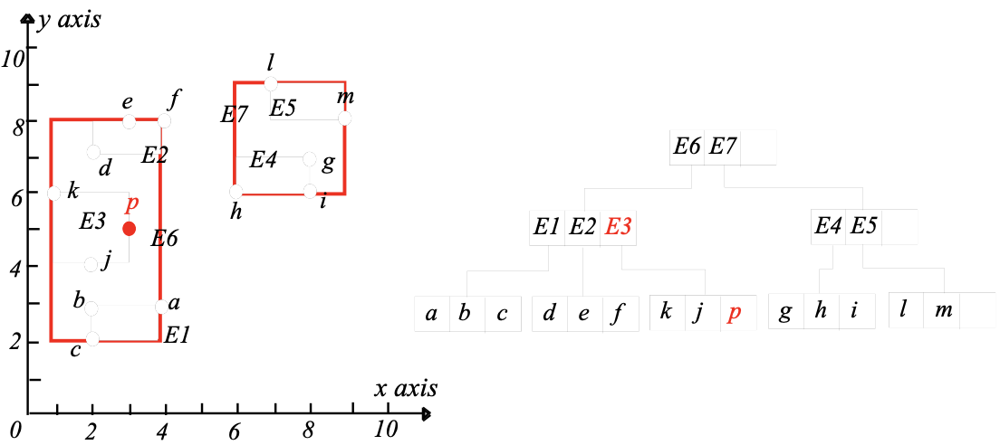
但是还有一个问题就是：如果插入新的数据点之后，当前节点的容量满了该怎么办？比如我们在往上面的R树中插入一个新的点S(2, 5)，那么根据上面的步骤，我们发现S还是应该插入E3区域，可是这个时候E3区域已经满员了，这时候再插入新的节点，就需要进行节点的分割。
我们可以根据节点的x或者y轴坐标大小对节点进行划分，比如上面的例子里，按照x坐标划分，就要将四个节点kjps分成(k, s)(j, p)两组，然后将E3区域划分成两个部分，其中(k, s)仍然属于E3，而(j, p)被划分到一个新的区域E8中，E8此时没有挂靠任何一个更大的区域，处于游离状态：
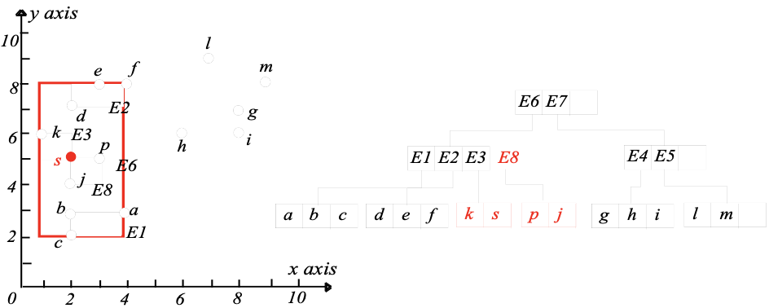
这个时候E1E2E3所处的这个R树节点多了一个E8，所以这个节点也需要进行分割，4个节点分成2*2的两组，而R树的分割原则是：
- 让新节点所对应的MBR周长的和最小化
因此，根据x和y轴坐标，我们有两种备选的划分方式：(E1, E2)(E3, E8)和(E1, E8)(E3, E2)，而这两种划分方式中，显然后一种生成的新节点的MBR总周长最小，因此最后的划分结果是(E1, E8)(E3, E2)，然后E6区域分裂成两块，在根节点也新增一个区域E9，如下图所示：
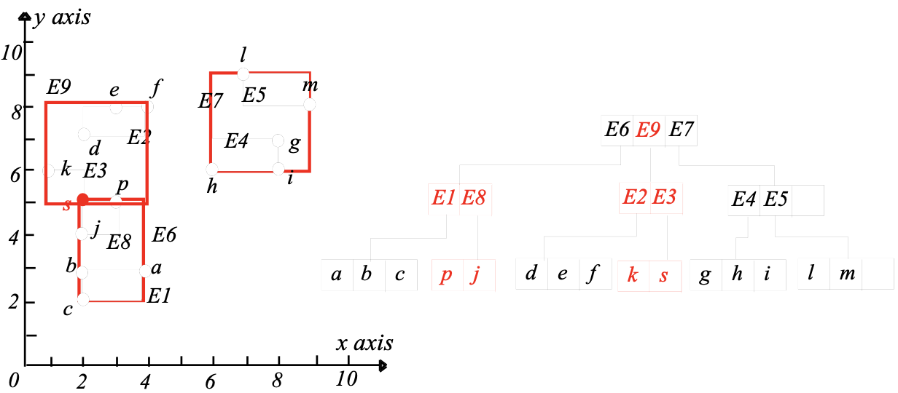
所以说R树的插入主要有两个要注意的地方：
- 插入的时候，根据MBR周长最小原则进行
R树节点的删除操作
R树删除的时候会碰到一个问题就是节点下溢(Underflow，插入时候节点满了叫做上溢Overflow)，比如一个R树的容量是3，而扇出率是40%，那么每个节点上至少要有1.2个entry，如果少于这个数量，节点就处于下溢状态，对于下溢的节点，R树需要将这个节点删除，并且将数据合并到其他节点中。
比如上面这个例子中，我们要删除k，那么E3下面就剩一个s下溢了，这时候E3就要进行拆分。我们需要先把s拿出来，等一下做重新插入处理。这样一来E3就删除了，而E3所在节点只剩E2也发生了下溢，所以E9也删除了，现在我们需要把E2一整块和s这些东西重新插入到R树中去。
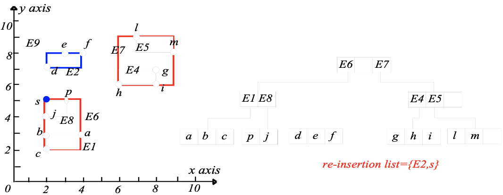
首先将非叶节点的E2重新插入，很明显E2被放到了E1和E8所处的节点中，然后插入s，根据插入操作的规则发现在E8插入最合适，所以最终的结果就变成了：
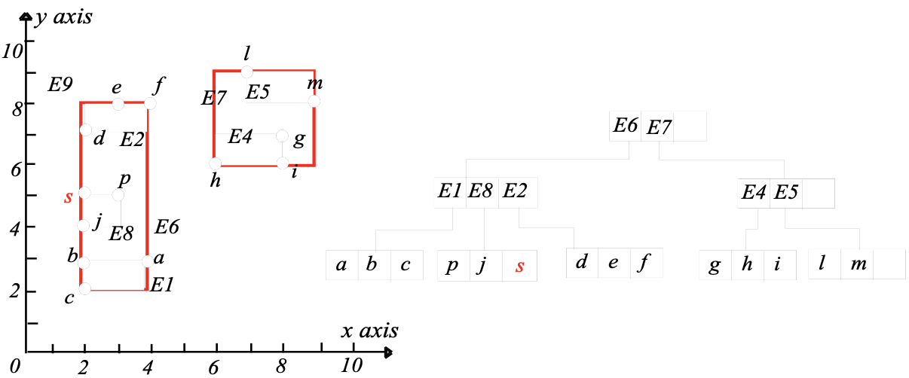
R树常见的查询类型
对于一个R树来说，常见的查询操作有：
- 区间搜索：找到一个区间内搜索满足要求的点
- 最近邻居搜索：找到离某个位置最近的K个对象
- 空间Join，给定两个集合，每个集合包含了若干点，分别对应一个R树结构，对两个集合进行join操作
最Naive的算法往往建立在序列扫描和块嵌套循环的基础上，而更高级的算法这门课也没讲太多。
NearestNeighbor搜索
最近邻(NN)的搜索也可以用R树来加速，我们可以将NN搜索形式化表示成下面的形式：
其中q是一个待查询的位置，而E是一个矩形区域。
课程里介绍了两种利用R树进行NN搜索的算法：Depth-First和Best-First算法。
Depth-First算法
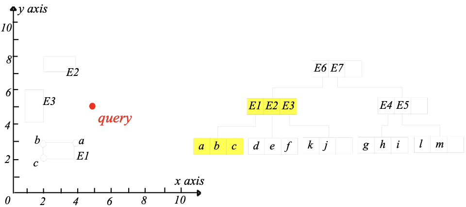
以上面的这个R树为例子，深度优先(Depth-First)NN搜索算法的基本步骤如下：
- 从根节点开始，先找到离查询点q最近的一个entry，然后进入这个entry，在这个entry中找到离q最近的entry，如此递归直到碰到叶节点。如果有多个相同的entry就随机选择一个。
- 比如下面这个例子中，我们先找到E6，然后在E6下面找到E1，在E1里面找到离q最近的一个点a作为我们的结果
- 然后进行回溯，到达E2，尝试从E2中找离q最近的点，但是发现aq的距离是根号5，而E2到q的距离就是根号5，所以我们可以推断E2中不存在比起a离q更近的点，同样E3中也不会有。
- 然后回溯到了根节点，我们发现q到E7的距离小于当前最近的aq距离，所以尝试从E7区域找到q的最近邻居，然后按照上面同样的步骤进行回溯，发现h比a离q更近。
- 这样一来我们就完成了1NN的搜索，最后的结果就是h，整个搜索过程中，我们没有访问所有的数据，而是只访问的E6，E1，E7和E4就完成了搜索，其他区域都在搜索过程中因为距离太远被剪枝了。
所以深度优先的NN搜索算法总结起来就是用回溯+剪枝的思路进行NN搜索，减少搜索过程中对数据的访问。但上面这个例子只是一个1NN的例子，如果是2NN或者更多的NN，我们也是用一样的方法，只不过要在搜索过程中维护更多的NN结果并及时更新就可以了。
Best-First算法
Best-First是另一种搜索算法，这种算法会在搜索的过程中维护一个按照排序好的表(其实应该是个堆)，表中存储的是查询点q到每个entry的距离信息，然后每个步骤都对表中距离最小的entry，还是用上面同一个图作为例子，一开始的情况如下：
然后E6到q距离最小，所以就访问E6，然后这个表就变成了：
然后访问E7，得到：
下一个要访问的就是E4，这时候已经到叶节点了，所以可以直接计算q到叶节点上所有数据的距离，得到：
这个时候距离q最近的变成了一条真的数据点h，所以这就是q的1NN，假如还要找2NN，3NN就继续下去，直到找到满意的所有NN
Best-First实际上用了贪心的思想，因为在这个问题场景下，局部的最优和全局的最优是等价的，同时也可以证明BF算法访问数据点是按照到q的距离递增的顺序进行的，所以BF是work的。
Skyline查询
天际线(skyline)查询是另一种数据库中的重要查询方式，比如我们现在要去旅游订酒店，根据酒店距离沙滩的距离和酒店的价格得到了下面这张图所示的酒店统计情况：
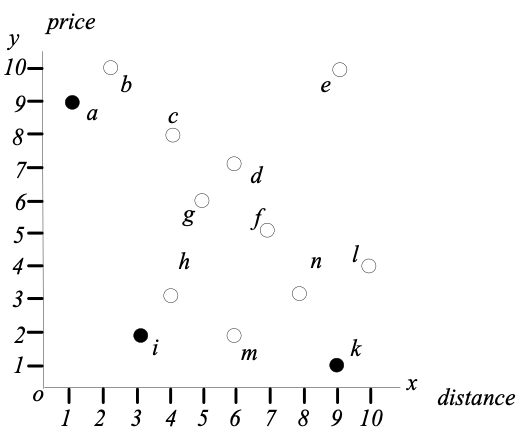
我们发现a比b肯定要好，因为a不仅便宜而且离沙滩近，我们称这个时候的a dominates b，但是a和i却不能进行比较，因为a和i在两个指标上互有胜负，而天际线查询要查询的结果就是那些不被其他所有数据点dominate的数据点，比如在上面这幅图中，天际线就是a和i和k，因为没有任何一个其他的数据x满足x dominates a/i/k，而天际线上的结果也往往是比较重要的，它们代表了某种程度上的最优，比如订酒店，顾客更倾向于考虑天际线上的酒店而不是其他，因为考虑其他酒店的时候总能在天际线上找到更好的结果。
天际线查询常用的算法有这样几种：
- Block Nested Loop(BNL)
- SCAN
- Sort First Skyline(SFS)
- Divide and Conquer(D&C)
- Nearest Neighbor(NN)
- Branch and Bound Skyline(BBS)
BNL/SCAN/SFS/D&C
| 算法 | 算法的描述 |
|---|---|
| BNL | BNL就是遍历每一条数据，然后对存储数据的块进行遍历，查看是不是有能dominate的数据，如果没有。那么这条数据就是skyline中的一个点。 |
| SCAN | SCAN算法是对BNL算法的优化，通过对数据表进行顺序扫描，在扫描的过程中维护一个存放skyline的表，对于一条新扫描到的数据，检查它是否dominate表中已有的数据，并且把被dominate的数据移除，然后如果这个数据对目前已有的所有数据点都是dominate的话，就把它加入到skyline中。一种变体是skyline list有长度限制，这时候只要注意表的大小不要超过上限就可以了。 |
| SFS | SFS也是一种优化的BNL算法，首先将整个数据库中的数据用一个preference function进行有偏好的排序，然后用BNL的方法进行skyline的查询。 |
| D&C | D&C算法就是先将数据分成几个区域，然后在每个区域上进行skyline查询，然后将查询的结果再做一次skyline查询就可以了。 |
上面这些算法都是从Naive的BNL发展出来的，它们的共同特点是都需要遍历整个数据库至少一次，这样做的效率实际上是非常低的。
NN
NN是一种利用R树的Skyline查询算法，首先我们要查询到数据库中的数据所处的空间离原点最近的一个数据点，并且这个点肯定是Skyline中的一个点(这个从直觉上很容易感觉到，同时也可以被证明)，然后我们以这个最近的数据点为标准对数据空间进行分割，比如下面这个二维平面上的例子：
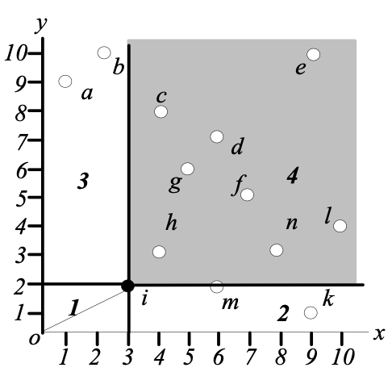
我们将平面分成了4个部分，其中1里面没有任何新的数据点，而4里面的点都不如点i，因此我们接下来只要考虑区域2和3，在2和3里面找到skyline的其他点就可以了。
然后我们只需要递归的对区域2和3重复上面的操作，找到新的Skyline点，如下图所示：
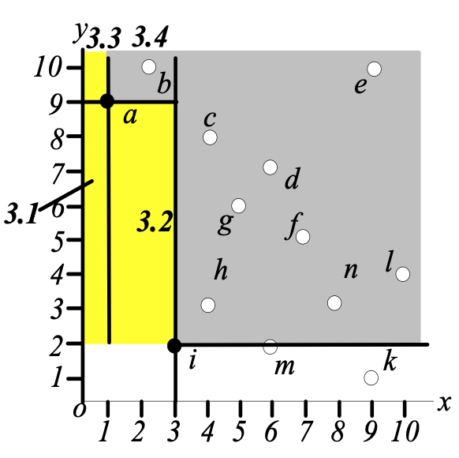
当每个递归最后分割出的2和3区域不再有数据点的时候，这一次递归就结束了。
相比之下，NN算法利用R树和NN查询使得Skyline查询不必再遍历所有的数据点，这样一来会比BNL系列算法快很多，但同时，NN算法也导致了更多的查询操作，并且可能会有一些空查询的存在(要检查一个区域内是不是还有数据点)
BBS算法
BBS算法是基于Best-First算法的Skyline查询算法，它同样会维护一个R树entry的表，比如下面这个例子：
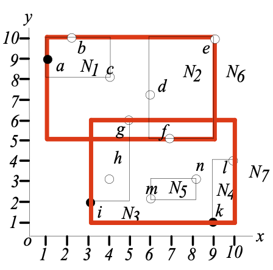
这个时候计算MBR到原点的距离使用的是曼哈顿距离，并且计算的是矩形的左下角到原点，比如上面N6的左下角是(5,1)那么N6区域到原点的距离就是6，而N7到原点的距离是4，而BBS算法的整体步骤如下：
- 首先从根节点开始，将R树中的entry按照到原点的距离放入Best-First算法的记录表中并排序，然后每次访问记录表的第一个entry
- 比如下面是访问了表中的N7之后的结果，我们下一步要访问的就是e3了
- 然后我们得到了ihg三个点到原点的距离，这时候i一定是一个skyline点，因为它是整个算法搜索过程中第一次找到的离原点最近的数据点，那么它被记录到结果中，并从表中移除，下面我们要访问的是e6
- 而搜索e6的时候，我们只会把e1放到list中而不会把e2放到list中，因为已经发现的skyline点i要比e2区域dominate，所以只需要考虑e1就可以了。
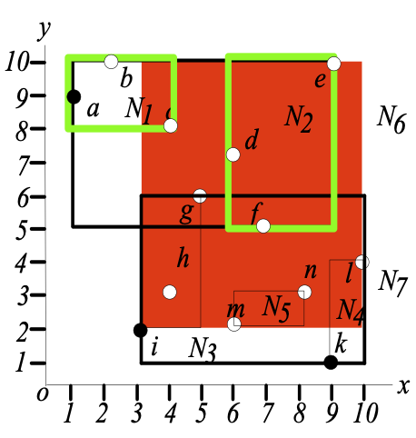
- 按照上面的方法，不断重复，并且在访问某个区域之前先检查它是不是被已有的skyline点dominate了，如果是就立马移除不要再搜索这片区域，如此循环下去直到搜索结束。
BBS算法说白了就是使用Best-First的NN搜索算法来对搜索区域进行剪枝，并且BBS算法是I/O最优的，因为它只访问了所有必须要访问的区域，而对于不需要访问的区域一点都没访问，但是BBS算法也有 缺点，它需要大量的内存消耗。
频繁模式与关联规则挖掘
这门课的第二大部分内容是数据挖掘和信息检索，不过也都是介绍性的东西，首先介绍了一些数据挖掘和信息检索的基本概念，包括这样几个东西：
- OLAP和OLTP的概念
- 信息检索和数据库查询的区别
- 数据仓库的概念和架构
- 数据挖掘的基本概念
- 信息检索的基本内容，包括：
- 相关性排序
- 同义词、同音异义词和本体
- 文档的索引
- Web搜索
- 对信息检索效果的评估方式
- 结构化数据的信息检索
这些东西作为概念性的介绍没有什么好多了解的，基本停留在随便买本相关的书都能找到相应内容的程度。我们重点关注一下据说考试会考的关联规则挖掘(也叫频繁模式挖掘)。
关联规则挖掘的目标是挖掘出数据中隐含的常见组合方式，比如给定一系列顾客的购物记录，每个购物记录上包含一系列商品，关联规则挖掘就是要找出哪些商品被顾客同时购买的几率最高，这里其实将同时购买定义成了商品之间隐含的一种规则，比如我们要找下面这种形式的规则：
即同时购买X和Y商品会导致购买Z，我们定义两个关键的量：
- support支持度，简写成s，一个事务(在具体问题背景中就是购买记录)中同时包含XYZ的概率
- confidence置信度，简写成c，是一个条件概率，在一个事务包含
的情况下，它也包含Z的概率。
关联规则挖掘的最经典算法叫做Apriori算法，它的基本步骤如下：
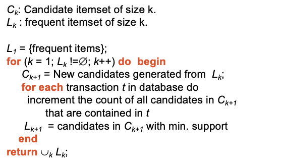
这个算法首先要定义大小为1的频繁商品集合，然后一步步不断挖掘出更大的频繁商品集合。这里的候选集Candidate Itemset是由上一阶段的频繁集组成的，然后通过统计每种候选集出现的次数，并去除支持度小于规定的阈值的那一批，将剩下的作为当前的K项频繁集，然后重复上述去挖掘K+1项的。一个简单的例子如下图所示：
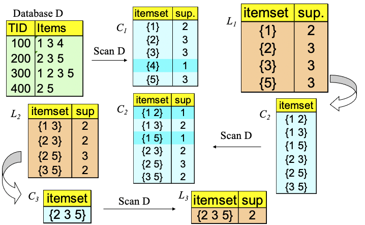